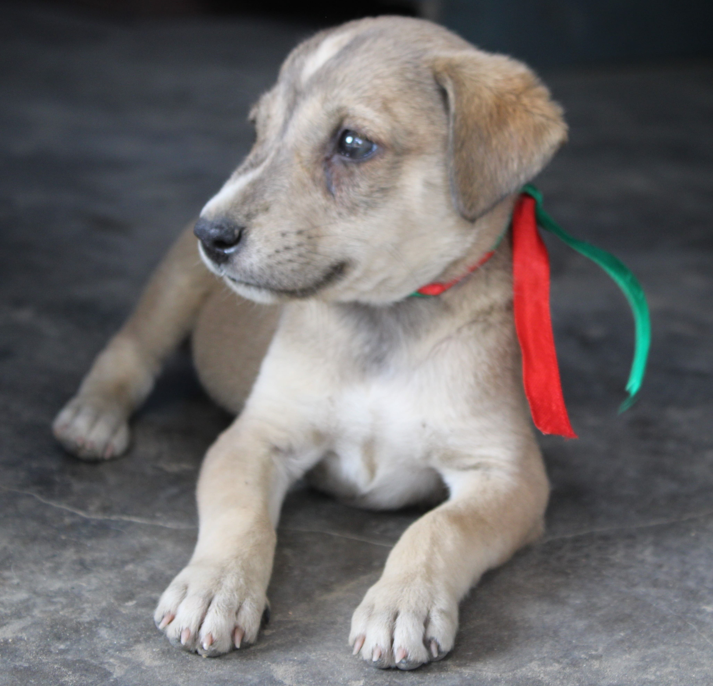
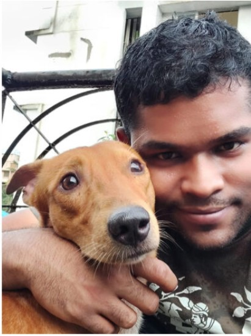
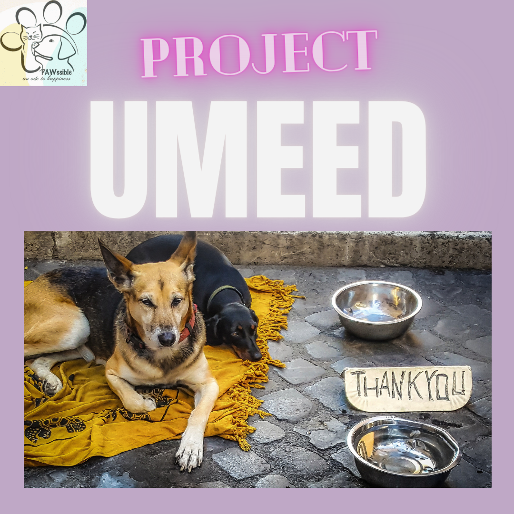
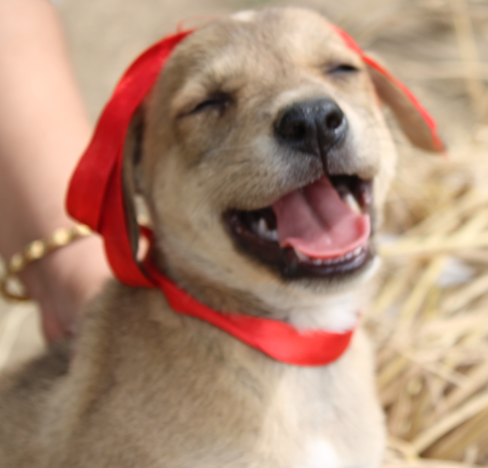

Keeping this thought in mind, Team Pawssible had hosted an awareness week to teach people about the different ways in which they can contribute in helping stray animals, as we all know hosting an event is the most powerful way to raise awareness and educate people about the lives of stray animals in India
A lot of people, pet parents or not, sympathize with the animals living on the streets . It is heartbreaking to see an animal abandoned, or in pain without anyone to help. Some people would perhaps want to deliver help but don’t know how to go about it as it isn’t always feasible to find a home for the strays. But there are various ways in which we can ease their pain.
The first event of the awareness week was all about this. We had organised a webinar by Dr Ashish Pandey, which took place on 23rd August to spread awareness about the diseases suffered by stray animals and how people can help in treating it.
Animal rights refer to the idea that animals have a right to be free of human use and exploitation, but there is a great deal of confusion about what that means. With the aim of instilling sensitivity towards animals into people, we organised an interactive session with a renowned animal activist Nikhil Shridhankar on 22nd August.
We strongly believe awareness and education about animal rights can play an important role in creating a compassionate and considerate society
Feeding stray dogs is a moral gesture and even though they can’t talk , their gratitude shines through their eyes and wagging tales. Team Pawssible decided to launch project UMANG during the lockdown to make sure no innocent soul has to starve to death.
These furry friends are not always lucky enough to get food everyday, therefore, our aim is to provide relief to street dogs from their plight and bring a Positive change in their lives by feeding these hungry souls .
You can also be a part of Umang and join us in our initiative. What better way to spend your weekends than feeding the strays.
Millions of stray animals live on the streets of India. These animals are highly prone to diseases caused by bacteria, viruses, fungi and parasites.
Vaccines are an effective, convenient and easy way to protect animals and humans against the potential dangers of many diseases that are highly contagious and sometimes fatal to the life of these animals.
Therefore vaccination drives play a major role in preventing the spread of such life threatening diseases. We believe controlling rabies is the key to saving lives and hence Pawssible organised a vaccination drive in the month of September, wherein we vaccinated more than 100 stray animals with the help of many people who came forward to volunteer and make donations .